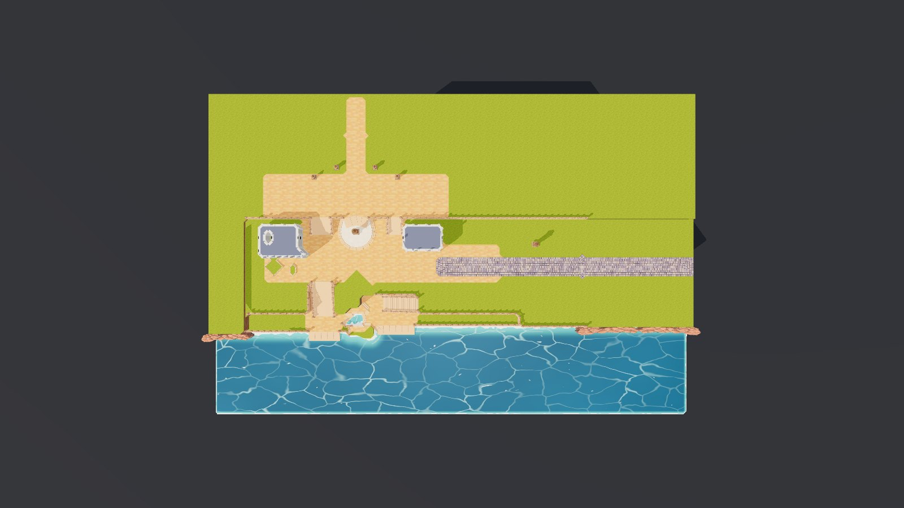
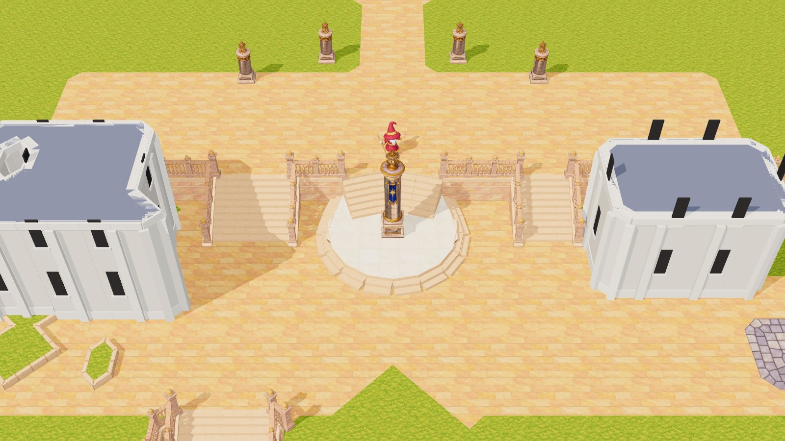
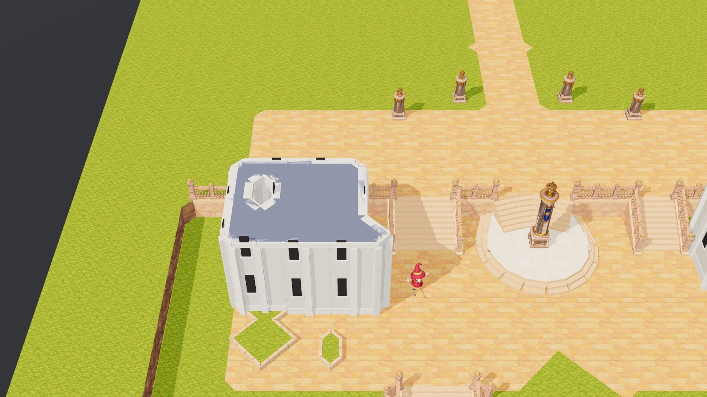
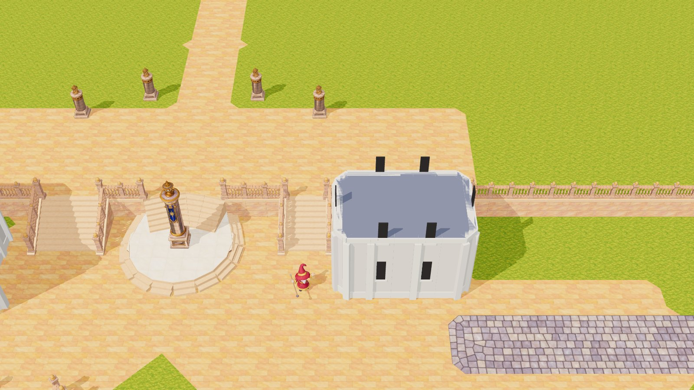
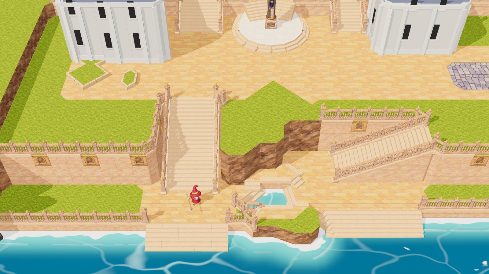
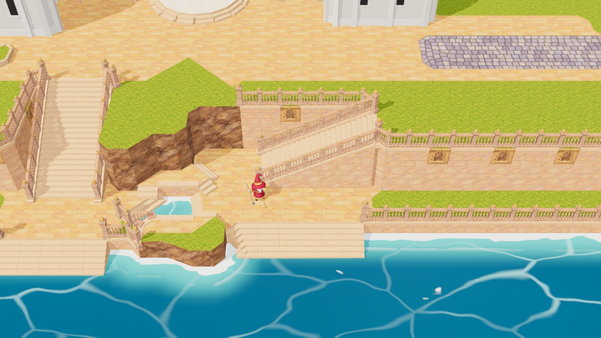

The Infirmary on the Kit
The infirmary's layout, the plan you picked on 22 November, rebuilt in 3D from the kit's pieces so it can be walked in the 3D game. Nothing on it is final art yet: every building, tent and the well are stand-ins. This page shows where it stands, so you can review it without loading the game.
Where it stands
Yes, the concept art and flow are done. The infirmary went through reading the concept, plans, flow and sense on 22 November as a flat grey-box. Today's work started the second half: building it in 3D.
Deciding what the place is
- Concept art read as a plan (the caged well, the cots, the conduits)
- Three plans plus a control; you picked plan D ("the flow is very good, where you see the people to heal first")
- Flow in the game: 8/10, passed (four rounds, revisions 4 to 7)
- Sense in the game: 9/10, passed (revision 9)
Building it on the kit
- Trace plan D into a kit scene, 0 errors (today)
- Walkable in the 3D game (today, on its branch)
- Your look at this draft, then the new pieces: Codex pictures for your OK before any Meshy model
- Surfaces: tiling textures from Codex
- Paint-over of the grey-box, as the dressing target
- Dressing: lamps, beds, cots, pipes, vines
- Beauty, judged in the whole scene at the game's camera
From concept to scene
The concept is a walled box. Plan D kept its ideas (the caged well, the conduits, the cots under tents) and put them on a slope down to the sea, with the road arriving from the north on the well's axis.



The walk, at the game's camera
In the order you'd play it. The small wizard is there for scale.







What's off in this draft
- Everything is a stand-in. Tents are posts, the well and smokestack are round piers, the greenhouse and stills are grey boxes. They're the piece list for the next step.
- The east flight lost plan D's long run along the drop (no room on the kit grid), so the two overlook flights look alike again, which the flow critic marked down before.
- The conduit walkways (raised paths from the well to what it feeds) mostly didn't survive where the flights land. They may come back as dressing: brass pipes with vines.
- The bath corner at the shore is cramped and messy.
- Woods are drawn as plain lawn: the kit has no woods floor yet.
Questions
Answers save as you go. Leaving a box blank is fine; I'll ask again rather than assume.
Did I get the code-drawn art rule right this time?
As written in the process doc: code is fine for procedural pieces, alone or mixed with painted sprites and textures: the stone-by-stone floors, plants, water, waterfalls. Buildings, facades and other large set pieces aren't drawn in code; they come from Codex pictures made into Meshy models. My summary in the terminal ("narrowed to buildings…") read the wrong way round.
The east flight: keep it short, or make room for the long run?
Plan D's east flight ran along the drop toward the stills so it wouldn't mirror the west one. Getting it back means moving the well's dais west a few metres, or the stills east.
My pick: move the stills east. It keeps the well on the road's axis and costs nothing but a few cells.
Is the layout good enough to start on the pieces?
The next step is Codex pictures of the new pieces: the caged well, the greenhouse, the stills, tents with cots, conduit pipes, the bath, the smokestack. You OK each picture before any Meshy model.